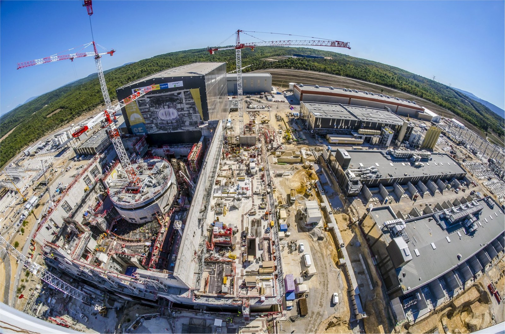
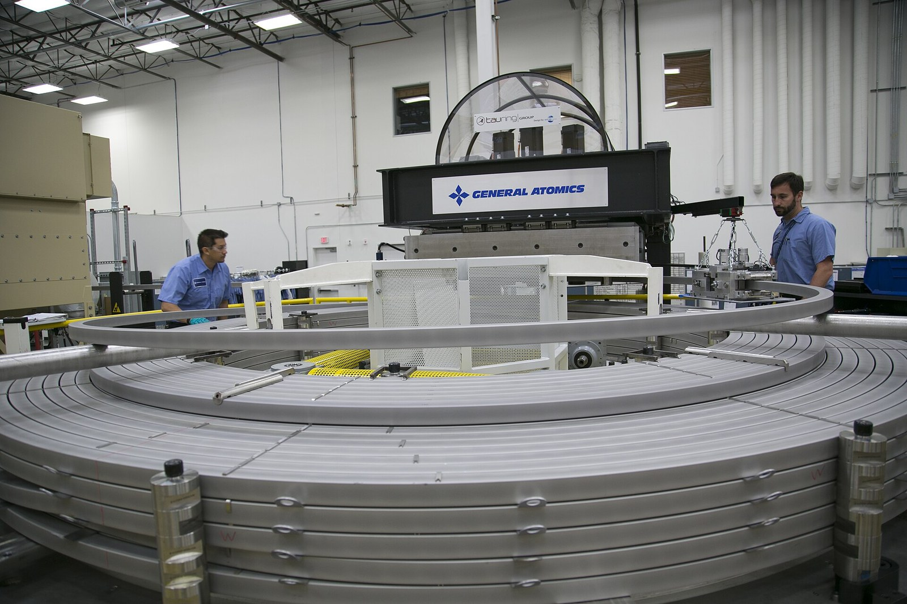

ITER: why, where and who
Why would countries that often disagree build one fusion machine together instead of each building its own?
Prior knowledge
- The 1985 Geneva summit and the large tokamaks JET and JT-60chapter Big machines and world politics: 1970s to 1985
- A tokamak holds a plasma ring with magnetic fieldschapter Tokamak or stellarator?
Core path: follow the steps in order. Tasks marked Optional give extra practice. Optional tasks: 1.
Think about it
On a hill in southern France, about 5,000 people work on one machine. Its parts are made in factories in Asia, Europe and North America and travel by ship and by road to the site. Some parts weigh hundreds of tonnes. The countries that pay for it are often rivals in politics and in trade. The idea for the machine is about forty years old, and the machine has still not made its first plasma.
Why would countries that often disagree build one fusion machine together, and can such a project succeed?
Review: the machines before ITER
Predict
Make your predictions before investigating 2 questions
Prediction 1: why share one machine?
Prediction 2: the new plan
Investigate
Investigate 1: forty years in the timeline
The timeline below shows eight events about ITER. Open and read at least five of the cards (about 10 minutes). For each, make a short note: year, what happened, and whether it shows cooperation, progress or a problem.
From your notes, name two events that show cooperation or progress and two that show problems or delays. Write one sentence for each, with its year.
Model answer
Cooperation and progress: In 1985 Gorbachev proposed to Reagan in Geneva that their countries build a fusion experiment together. In 2006 seven Members signed the ITER Agreement in Paris. Problems and delays: The site choice took until 2005 because the partners could not agree between France and Japan. In 2024 ITER presented a new plan with research operation only in 2034, after defects in key components.
Assess your own answer
Tick the points your own answer already contains.
Review the theory summary.
Why one machine for the world
In November 1985, at their first summit in Geneva, the Soviet leader Mikhail Gorbachev proposed to the US President Ronald Reagan that their countries should build a fusion experiment together. In 1987 four partners agreed to design it together: the European Community, Japan, the Soviet Union and the United States. The conceptual design began in 1988. The machine was called ITER; iter is also Latin for "the way".
Why share one machine? The next step after JET and JT-60 had to be a machine that makes far more fusion power than it receives. Such a machine is very large, it needs new technology from many industries, and it costs tens of billions of euros. No single country wanted to carry the whole cost and the whole risk. Sharing also brings together the knowledge of many fusion laboratories. And cooperation had a political value: rivals of the Cold War could work on a peaceful energy project. In return, every Member receives all the scientific results and the intellectual property that ITER produces.
Investigate 2: choosing the site
A two-year contest for the site. Four places were offered for ITER: Clarington in Canada, Vandellòs in Spain, Cadarache in France and Rokkasho in Japan. In November 2003 the European Union chose Cadarache as its one candidate, and in December 2003 the Canadian offer was withdrawn. The same month a meeting of ministers ended in deadlock: the European Union, China and Russia supported Cadarache, while Japan, Korea and the United States supported Rokkasho. The ministers said that both sites were excellent and needed more study.
Only on 28 June 2005, at a meeting in Moscow, did the partners agree on Cadarache. Japan, which lost the contest, received compensation: the Broader Approach projects in Japan, among them the satellite tokamak JT-60SA and a research facility for fusion materials. The first Director-General of ITER, Kaname Ikeda, was also Japanese.
The site is at Saint-Paul-lez-Durance, next to the French research centre CEA Cadarache, about 75 km north of Marseille. Studies showed that it met the geological, hydrological and seismic requirements and had water, electricity and a strong scientific and industrial environment. As the host, France prepared the 180-hectare site with its 42-hectare platform, opened an international school in Manosque for the staff's children and adapted 104 km of roads, the ITER Itinerary, so that the heaviest parts can travel from a Mediterranean port to the site.

The plan that changed
A big project has a baseline: the official plan for its schedule and cost. ITER's baseline of 2016 planned a short first plasma in 2025 and deuterium–tritium ($\text{D–T}$) operation in 2035. On 3 July 2024, ITER presented a new baseline. It skips the early test plasma and starts with a more complete machine:
| Milestone | 2016 baseline | 2024 baseline |
|---|---|---|
| first experiments | 2025 (first plasma) | 2034 (research) |
| deuterium–deuterium (D–D) | — | 2035 |
| full magnetic energy | 2033 | 2036 |
| deuterium–tritium (D–T) | 2035 | 2039 |
ITER gave several reasons: the COVID-19 pandemic slowed factories and transport, some first-of-a-kind components were harder to make than expected, some key parts had defects that needed repairs, and some schedules were too optimistic. The repairs and changes were estimated to cost about five billion euros more. All the dates after 2026 are plans, not results.
Word bank
host country · Member · to contribute · in kind · a share · to compensate · a contest · a deadlock · to negotiate · a baseline (official plan) · a milestone · a delay · to postpone
Sentence starters
- The host country gains …, but it also has to …
- The other Members gain …
- One advantage of sharing is …
- A disadvantage of sharing is …
- I agree with you, but …
- The evidence suggests that …
Pair discussion: what does the host gain?
Discuss with a partner, using the word bank and the sentence starters. One of you argues for the host country, the other for the other Members.
Then write three or four sentences: what does France (and the EU) gain by hosting ITER, and what does it cost them? What do the other Members gain?
Model answer
The host country gains jobs, contracts for local industry, international scientists and prestige; in 2005 France expected billions of euros of research money and construction work. But it also has to prepare the site, build roads and a school, and the EU pays the largest share, $45.6\ \%$ of the construction costs. The other Members pay only $9.1\ \%$ each and still receive all the results and the intellectual property. One disadvantage for them is that the machine and most of the jobs on the site are far from home.
Assess your own answer
Tick the points your own answer already contains.
Review the theory summary.
Theory summary
Who: seven Members
ITER has seven Members: China, the European Union, India, Japan, Korea, Russia and the United States. As the host, the European Union pays $45.6\ \%$ of the construction costs; the six others pay $9.1\ \%$ each. Together they represent more than thirty countries, because the EU counts its member states.
The Members pay mostly in kind: about nine-tenths of their contribution is delivered as finished components, systems or buildings, not as money. Each Member has a Domestic Agency that signs contracts with its own industry; Europe's agency is Fusion for Energy. On the site, the ITER Organization assembles the machine and will run it. It is led by a Director-General, since October 2022 Pietro Barabaschi, and the ITER Council, where every Member is represented, takes the major decisions. About 5,000 people work on the site and in its offices (2026).

Technical and organisational challenges
The technical challenges come from building parts that have never existed. In 2022 the steel sectors of the vacuum vessel did not have the right shape at their welding edges, and the cooling pipes of the thermal shield had cracks. Both had to be repaired, which halted the vessel assembly; the next sector module went into the pit only in April 2025. The parts must also fit to within millimetres, and the machine is a nuclear installation that must pass the French safety authority's rules.
The organisational challenges come from sharing. A coil made in one country must fit a part made in another, so thousands of interfaces must be managed. Decisions need the agreement of seven Members with their own budgets and politics. The United States left the project in 1998 and came back in 2003, and the United Kingdom left after Brexit.
As of November 2026, assembly is moving faster: in July 2026 the sixth of nine vacuum vessel modules was lowered into the pit, about six months ahead of the new schedule.
Sort the challenges
Back to your predictions
Compare your predictions with the text and the timeline. Then answer the opening question in one or two sentences: why do rival countries build one machine together?
Would you change your prediction?
Apply
Put the story in order
Find the errors
Write: why is ITER international?
Write a short paragraph of 60–80 words for your school's science newsletter: Why is ITER an international project? Give at least two reasons and one fact with a date or a number.
Word bank
to share the cost · the risk · knowledge · industry · a Member · in kind · peaceful cooperation · the Cold War
Sentence starters
- ITER is international because …
- Another reason is …
- For example, in …
- As a result, …
Model answer
ITER is international because the machine is too large, too expensive and too risky for one country. It needs new technology from many industries, so seven Members share the work: most of their contribution is parts made in their own factories. Another reason is political. The idea came from the 1985 Geneva summit, when Gorbachev and Reagan looked for peaceful cooperation during the Cold War. As a result, all seven Members receive all the scientific results.
Assess your own answer
Tick the points your own answer already contains.
Review the theory summary.
Common misconception
"ITER is a French project, so France pays for it." France is the host country, but ITER belongs to seven Members. The European Union as a whole pays the largest share, and most of each Member's contribution is machine parts made in its own factories.
A second mistake is to quote an old date as if it were still the plan. A newspaper of 2018 that writes "first plasma in 2025" reported the plan of that time correctly. That plan was replaced in 2024, so a text written today must give the date of the plan it quotes.
Optional Role-play: Moscow, June 2005
Groups of four: two of you speak for the European Union (Cadarache), two for Japan (Rokkasho). Prepare for five minutes, then negotiate for five minutes: why should the machine be built at your site, and what would you accept if it is not? Afterwards, write two sentences: what did your group agree, and was it close to what really happened?
Word bank
we propose · in return · we cannot accept · a compromise · compensation · both sides
Sentence starters
- We propose that …
- In return, we would accept …
- We cannot accept …, because …
- A fair compromise would be …
Model answer
Our group agreed to build ITER at Cadarache, and in return Japan would host research projects and have the first Director-General. This was close to the real outcome of 28 June 2005, when Japan received the Broader Approach projects, such as JT-60SA, after it accepted Cadarache.
Assess your own answer
Tick the points your own answer already contains.
Review the theory summary.
Check your understanding
1. How ITER is paid for
2. The site
3. Reading a date
4. The big question
Can the world's largest fusion collaboration succeed? Write four to six sentences: one argument that it can, one argument that it may not, and your own conclusion. Use at least one dated fact, and say which facts are plans.
Word bank
to succeed · a goal · a delay · progress · a plan · a result · uncertain · to depend on
Sentence starters
- One reason to think ITER can succeed is …
- On the other hand, …
- This is a plan, not a result: …
- In my view, …, because …
Model answer
One reason to think ITER can succeed is that assembly is now advancing: in July 2026 the sixth of nine vacuum vessel modules was placed in the pit, about six months ahead of the new schedule. Seven Members have stayed together for twenty years. On the other hand, the project has been delayed many times, and the 2024 baseline moved $\text{D–T}$ operation from 2035 to 2039. These dates are plans, not results. In my view ITER can reach its scientific goals, but success depends on whether the Members keep paying and the repaired parts work.
Assess your own answer
Tick the points your own answer already contains.
Review the theory summary.
Summary
- ITER grew from the 1985 Geneva summit; four partners agreed in 1987 to design it together, and seven Members signed the ITER Agreement in 2006.
- One machine is shared because it is too large, too expensive and too risky for one country, and because cooperation also has political value.
- The site at Cadarache in southern France was chosen in Moscow on 28 June 2005, after a long contest with Rokkasho in Japan.
- The Members pay mostly in kind, through Domestic Agencies; the ITER Organization assembles and runs the machine.
- The 2024 baseline plans research operation in 2034 and $\text{D–T}$ operation in 2039. These are plans, not results.
Le coin français
ITER is built in the région Provence-Alpes-Côte d'Azur. Many people on the site speak English at work, but in the village, the shops and the school you hear French. Listen, repeat, and say the last sentence to your partner.